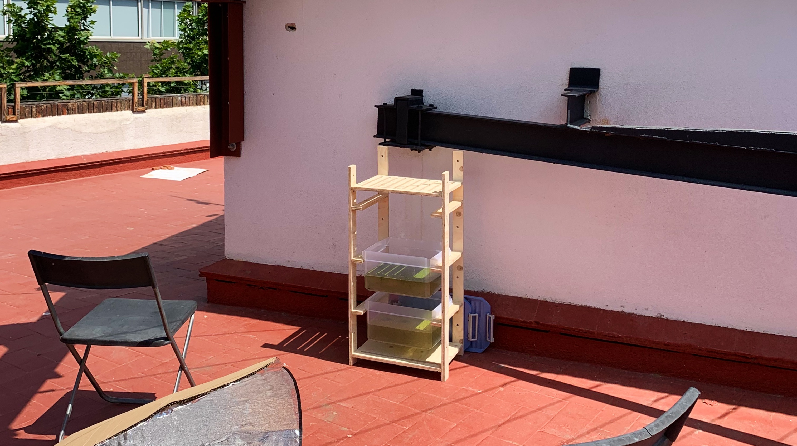

WEEK VI
Computer-Controlled Machining
For the weekly task, a stand/station was designed out of scrap pieces from the Fab Lab workshop. The design was simple and involved 12 pieces and 20 press-fit finger joineries. The purpose of this modular stand was to host 3 tubs or drawers to grow aquatic plants with space for surface ventilation.
Fig. 6.1 The control dashboards for both the CNC commands on Raptor
Exactly like the other weekly challenges, using the Raptor was less complex than imagined. The process involved creating flat0lay drawings of the components on Rhino. In the next step, components and values like position of the screws, navigation of the drill bit and axes were added.

Fig. 6.2 The output stationed at the IaaC rooftop for growing Duckweed/Water Lentils.